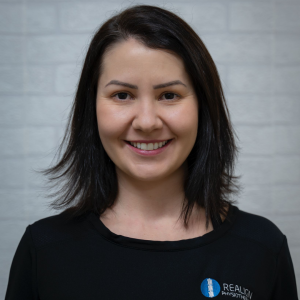
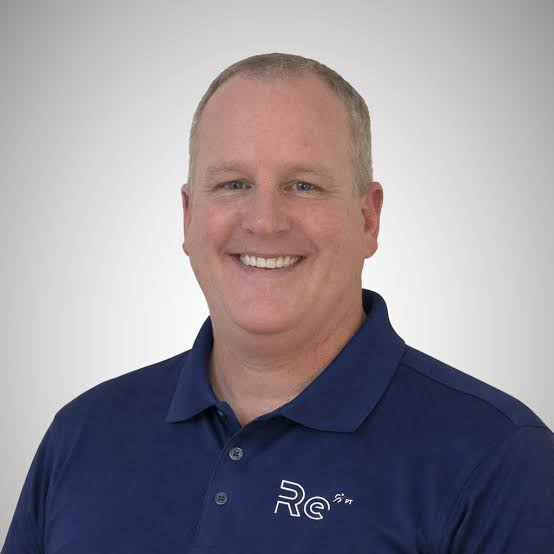
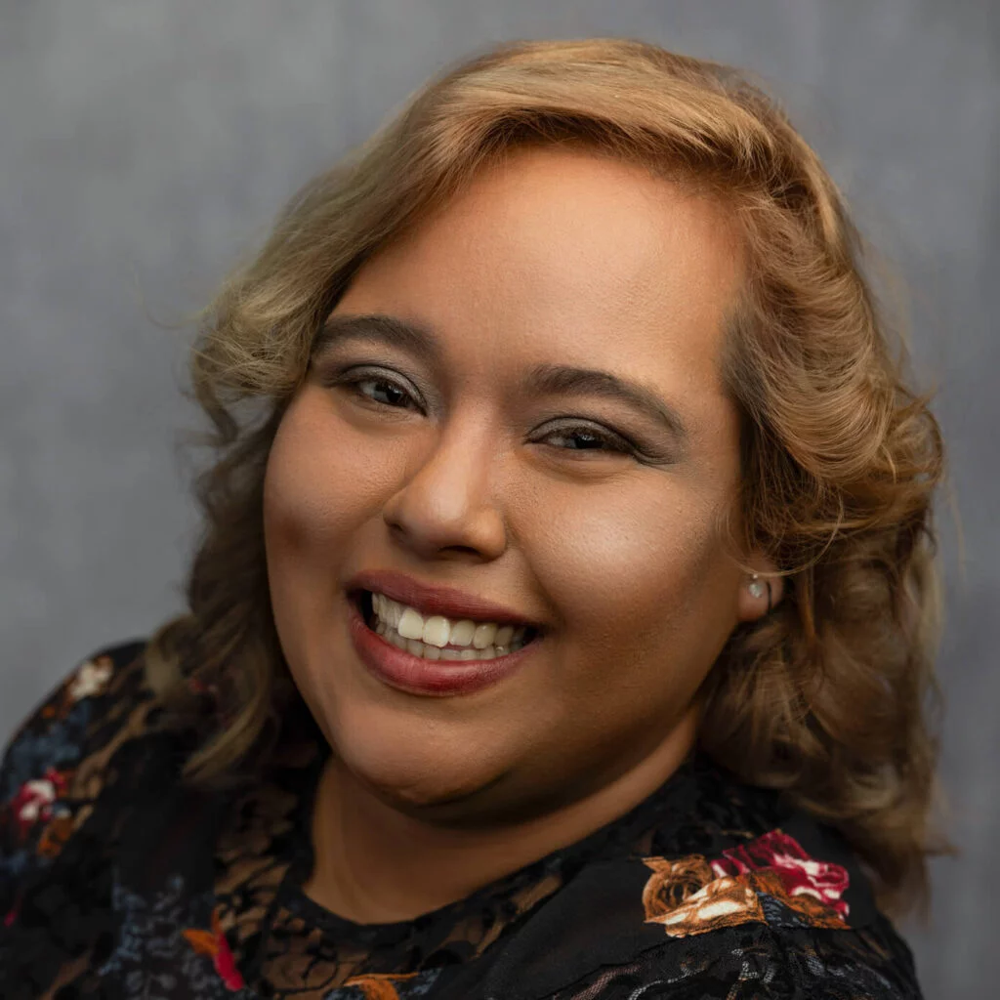
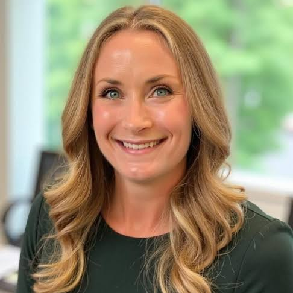

1300 ### ###
info@murraytafe.edu.au
|
David Milano (##) 81 404 268 dmilano@murraytafe.edu.au Graduated 19## with a Doctorate of Physical therapy from Glennwood university. Graduated 19## Bachelor of education from Glennwood university. David has been with MurrayTAFE for over 10 years. Communication, collaboration, quality-care, knowledgeable. |
||
| TEACHERS | ||
|---|---|---|
|
 Taylor Phillips (##) 81 980 534 tphillips@murraytafe.edu.au Graduated 20XX with a bachelor in art & design from Jasper University. Taylor was the design director for First Up Consultants until 20XX where he joined the MurrayTAFE staff. Creative, leadership, problem solving. |
 Jordan Mitchell (##) 21 255 281 jmitchell@murraytafe.edu.au Graduated 19XX with a Bachelor in Graphic Design from the School of Fine Art. Previously a senior UI/UX designer at Proseware INC, Jordan joined our team in 19XX. UI/UX design, user research, usability testing, project management. |
Yuuri Tanaka (##) 71 855 010 ytanaka@murraytafe.edu.au Graduated 20XX with a Bachelor in Art & Design from Jasper University. Coming from a senior designer position at Nod Publishing Yuuri has changed her career path to teaching. Creative, leadership, organisation, problem solving, teamwork. |
| SUPPORT | ||
|
 Manasi Goyal (##) 91 589 469 mgoyal@murraytafe.edu.au Graduated 20XX with a Bachelor in Graphic Design from the School of Fine Art. Graduated 20XX with a Master of Arts Graphic Design from Graphic Design institute. Manasi was an art director at Sundara Design before coming to MurrayTAFE. Leadership, project management, creative skills. |
 Mira Karlsson (##) 81 650 146 mkarlsson@murraytafe.edu.au Graduated 20XX with a bachelor in communications from Bellows College. Mira has over 5 years of social media marketing and management from various employers. Communication, strategic thinking, creative, analytical, content creation. |